tm_shape(NLD_muni) +
tm_polygons(fill = "population") +
tm_title("Population (count) as fill color: large municipalities dominate")Advanced Static Cartography in R
Session 2: Designing effective thematic maps
Martijn Tennekes
What makes a map effective?
Design questions
Before writing any code:
- Message: what should the reader take away?
- Audience and medium: report, journal, poster, slide? Printed or on screen?
- Data type: counts, rates, categories, a continuous surface?
- Visual hierarchy: which elements matter most for the message, and should therefore stand out most?
Principles
- For a single numeric variable (a univariate map), the two most common map types are the choropleth and the proportional symbol map; which one to use depends on the data:
- Densities / rates / percentages → choropleth (fill color)
- Counts / totals → proportional symbols (size)
- Many other map types exist; several are covered in this course (bivariate maps, glyphs, grid maps, cartograms)
- Choose a scale (classification) that fits the distribution and the message
- Choose a color palette that fits the data type (session 3)
- Make the thematic layer visually dominant; context (borders, basemap, labels) should support it
- Every legend, title and credit should earn its place
Map type follows data type
Counts on a choropleth: misleading
Counts on a choropleth: misleading
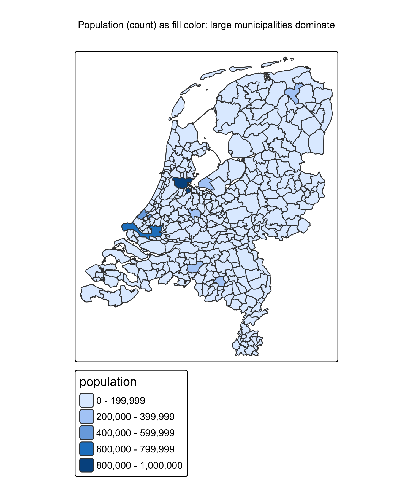
Counts: proportional symbols
Counts: proportional symbols
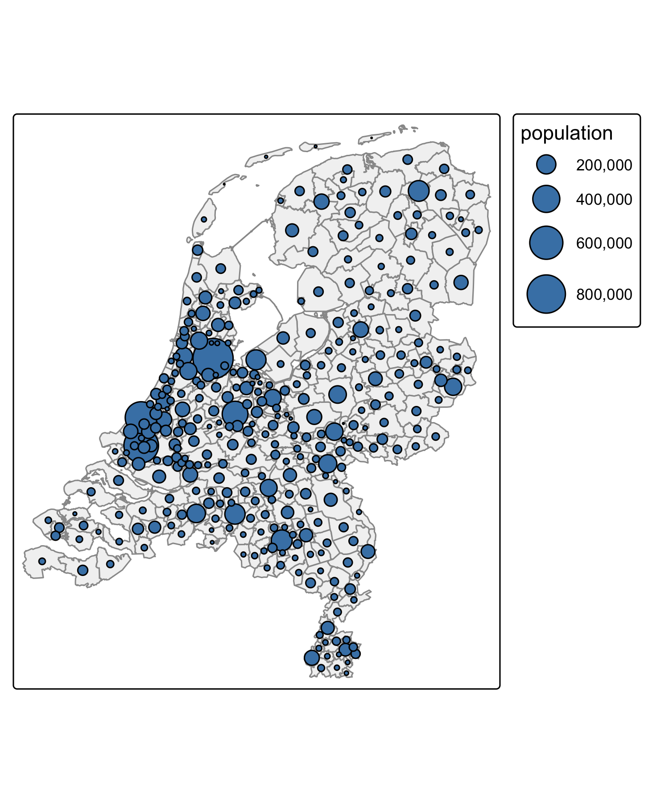
Densities: choropleth
Densities: choropleth
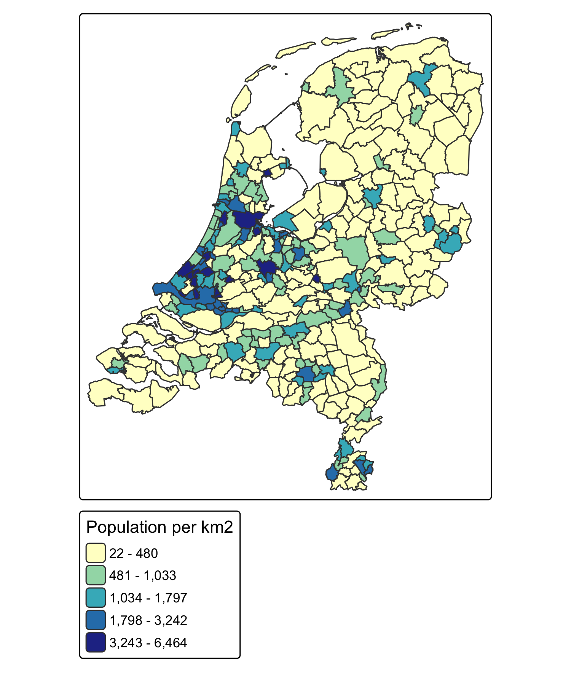
Combining a count and a percentage
Size for the count (population), fill color for the percentage (income_high: % of people with a high income):
Combining a count and a percentage
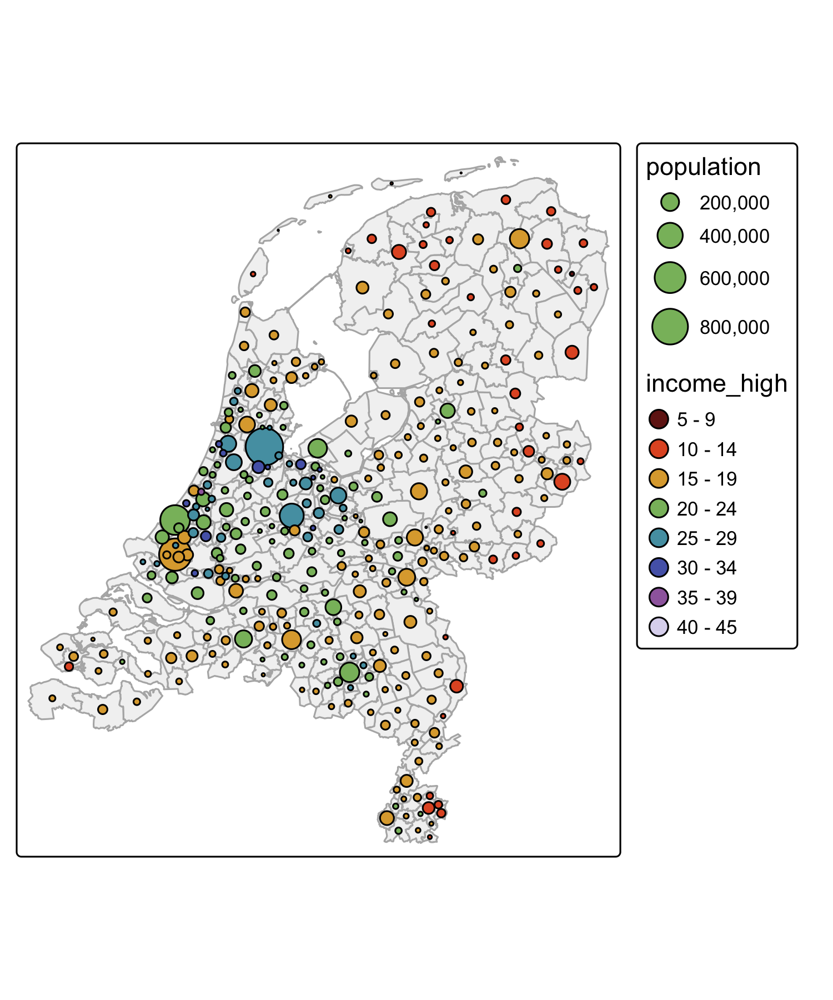
Scales: from data to visual values
Numeric data: interval scales
Numeric data: interval scales
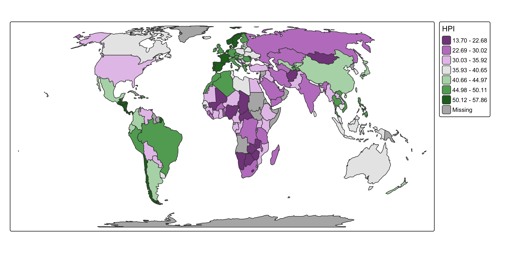
Classification styles
The style argument of tm_scale_intervals():
| Style | Classes based on |
|---|---|
"pretty" (default) |
rounded numbers; n is the preferred number of classes |
"equal" |
equal widths |
"quantile" |
equal number of features per class |
"fisher", "jenks" |
natural breaks (minimize within-class variance) |
"sd" |
standard deviations |
"kmeans" |
k-means clustering of the values |
"fixed" |
manual breaks |
The choice of classes may change the message of the map considerably!
Same data, different classification
tmap_arrange(
tm_shape(NLD_muni) + tm_polygons("income_high",
fill.scale = tm_scale_intervals(style = "equal")) + tm_title("equal"),
tm_shape(NLD_muni) + tm_polygons("income_high",
fill.scale = tm_scale_intervals(style = "quantile")) + tm_title("quantile"),
tm_shape(NLD_muni) + tm_polygons("income_high",
fill.scale = tm_scale_intervals(style = "fisher")) + tm_title("fisher"),
ncol = 3)Same data, different classification
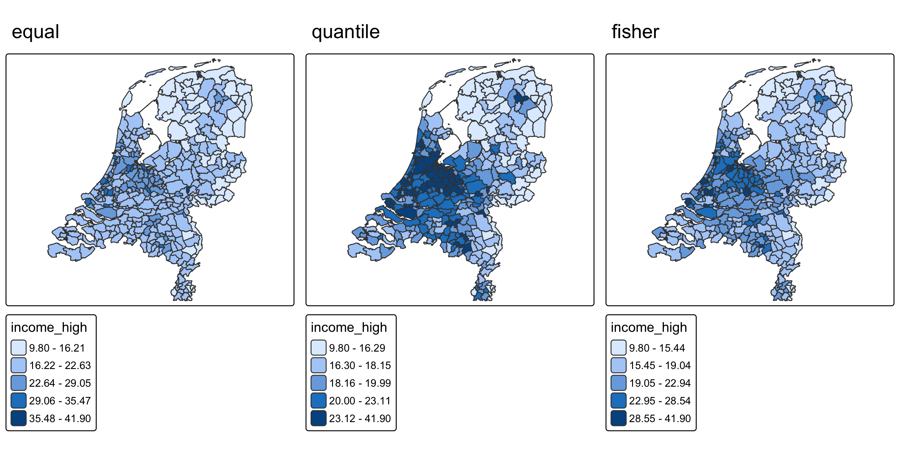
Interval labels
- Classes are intervals, by default closed on the left: [a, b) (
interval.closure) - By default, labels are disjoint: neat, but they leave gaps between classes
interval.disjoint = FALSE: exact, but boundary values seem to belong to two classes
tmap_arrange(
tm_shape(NLD_muni) + tm_polygons("income_high",
fill.scale = tm_scale_intervals(style = "equal")) +
tm_title("interval.disjoint = TRUE (default)"),
tm_shape(NLD_muni) + tm_polygons("income_high",
fill.scale = tm_scale_intervals(style = "equal",
label.format = tm_label_format(interval.disjoint = FALSE))) +
tm_title("interval.disjoint = FALSE"),
ncol = 2)Discuss: in which class is a municipality with 16.215? And with 16.22? Which labels suit your audience?
Interval labels
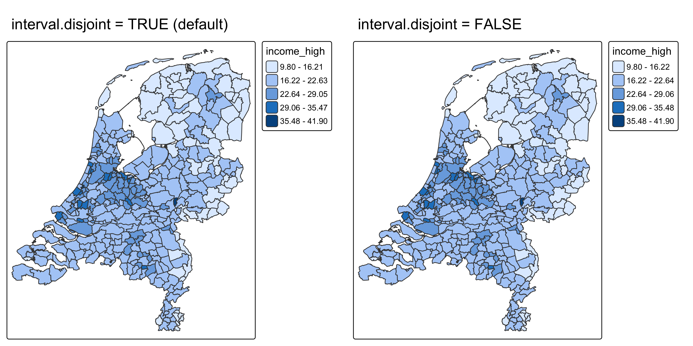
Fixed breaks
Use -Inf and Inf for open-ended first and last classes.
Fixed breaks
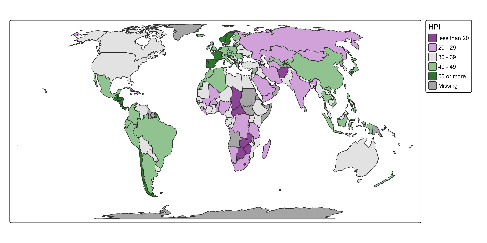
Labels at the class boundaries
label.style = "continuous": the legend shows the break values between the classes, rather than one interval label per class. This sidesteps the question of which class a boundary value belongs to.
Labels at the class boundaries
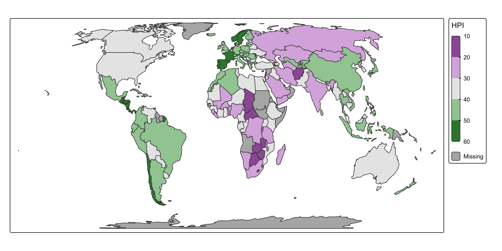
Discussion: choosing breaks
tm_shape(NLD_muni) +
tm_polygons(
fill = rep("pop_dens", 3), # same variable, three facets
fill.scale = list(
tm_scale_intervals(style = "pretty", values = "brewer.yl_gn_bu"),
tm_scale_intervals(style = "kmeans", values = "brewer.yl_gn_bu"),
tm_scale_intervals(style = "log10_pretty", values = "brewer.yl_gn_bu")),
fill.legend = tm_legend("Population per km2")) +
tm_layout(panel.labels = c("pretty", "kmeans", "log10_pretty"))One variable, three scales: facets with a list of scales (session 4).
| Breaks | Legend labels | Spread of colors |
|---|---|---|
"pretty" |
easy to read | often poor for skewed data |
"kmeans", "fisher" |
readable, but numbers seem arbitrary | good |
| log scale | harder to interpret | often good |
Discussion: choosing breaks
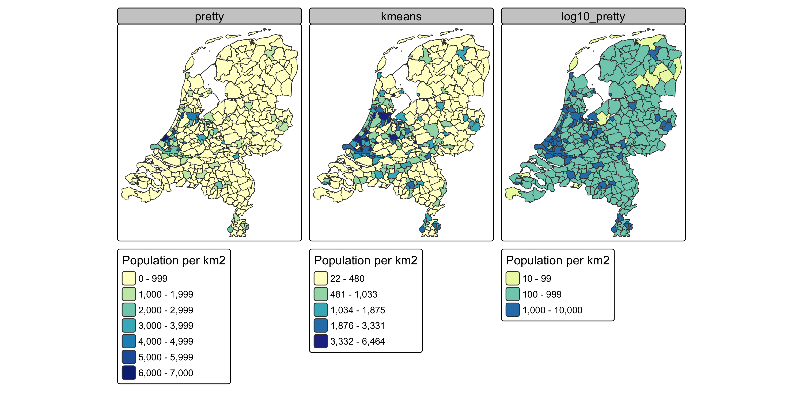
A practical strategy
- Start with
"kmeans"(or"fisher") or a log scale to see where the natural breaks are - Round those break values to numbers that are easy to read
- Use these as custom
breaksin the next iteration
A practical strategy
Continuous scales
limits: the data range mapped to the color gradientticks: positions of the ticks in the legend- Transformations for skewed data:
tm_scale_continuous_log(),_log10(),_sqrt(),_pseudo_log()
Continuous scales
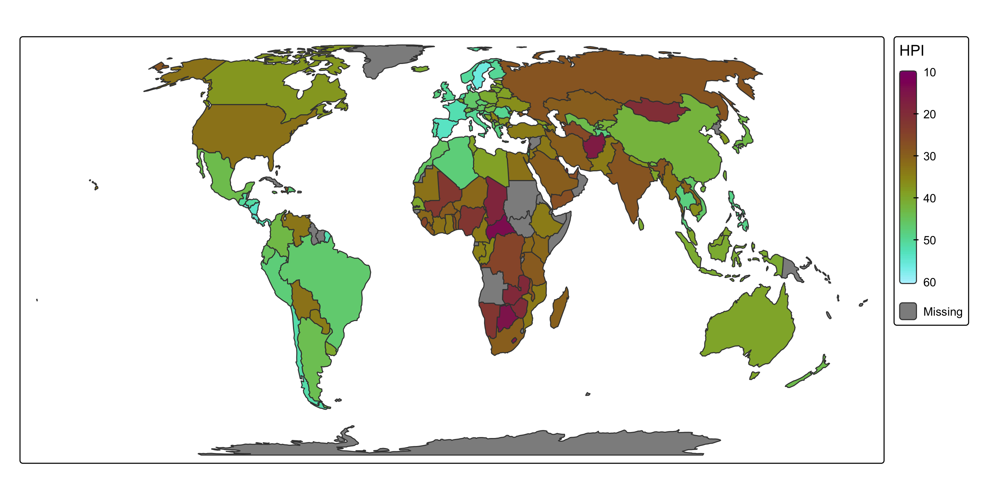
Legends
Legend title, orientation and size
Note: the content of a legend (breaks, labels, ticks) is specified in the scale; its appearance in the legend.
Legend title, orientation and size
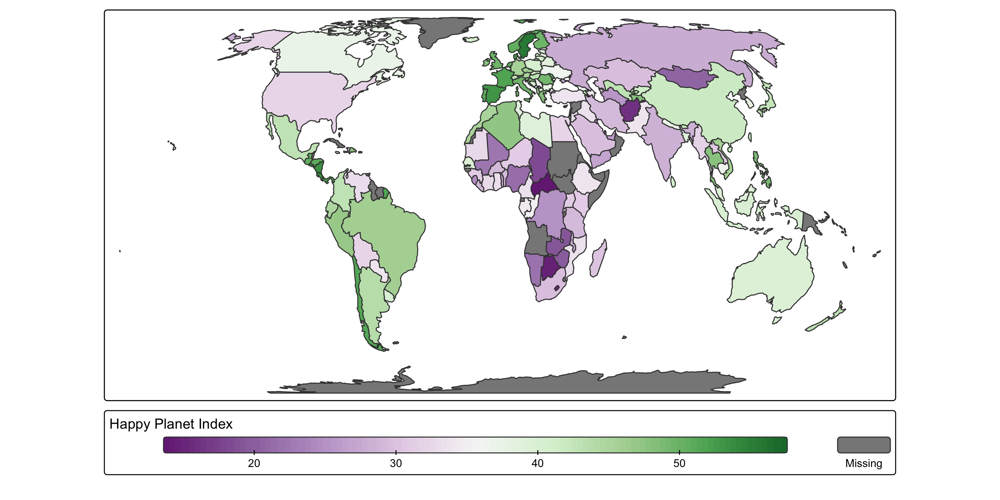
Label formatting
Other tm_label_format() options: digits, prefix, suffix, scientific, fun, …
Label formatting
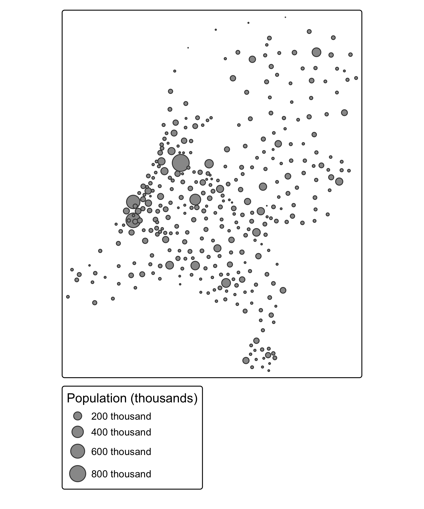
Legend layout
s + tm_polygons(
fill = "HPI",
col = "grey20",
lwd = 1,
fill.scale = tm_scale_continuous(values = "pu_gn", midpoint = 35),
fill.legend = tm_legend(reverse = TRUE,
frame = FALSE,
item.height = 2.25,
item.width = 1.8,
position = tm_pos_out(pos.v = "center"),
na.show = FALSE,
ticks = list(c(0, 0.1), c(0.9, 1)),
ticks.col = "white",
col = "white")) +
tm_layout(frame = FALSE, outer.margins = 0)Legend layout
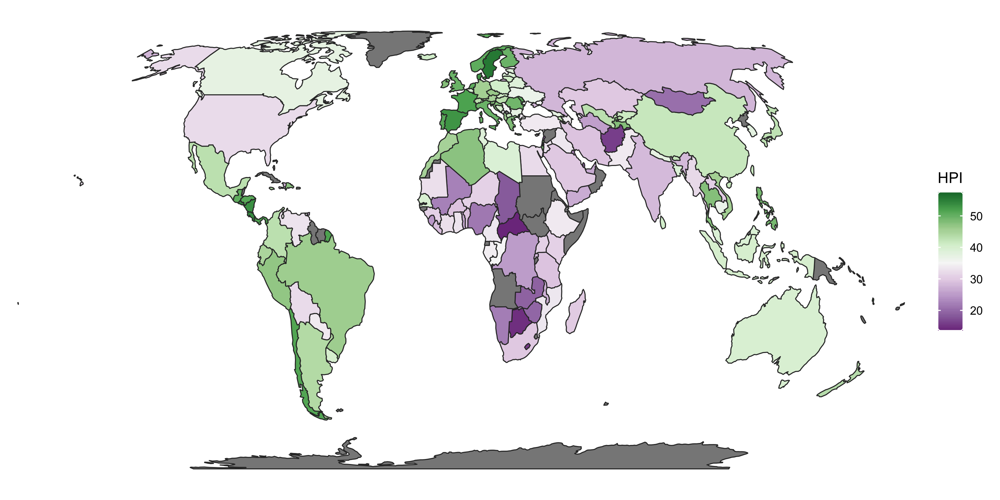
Manual legends
Manual legends
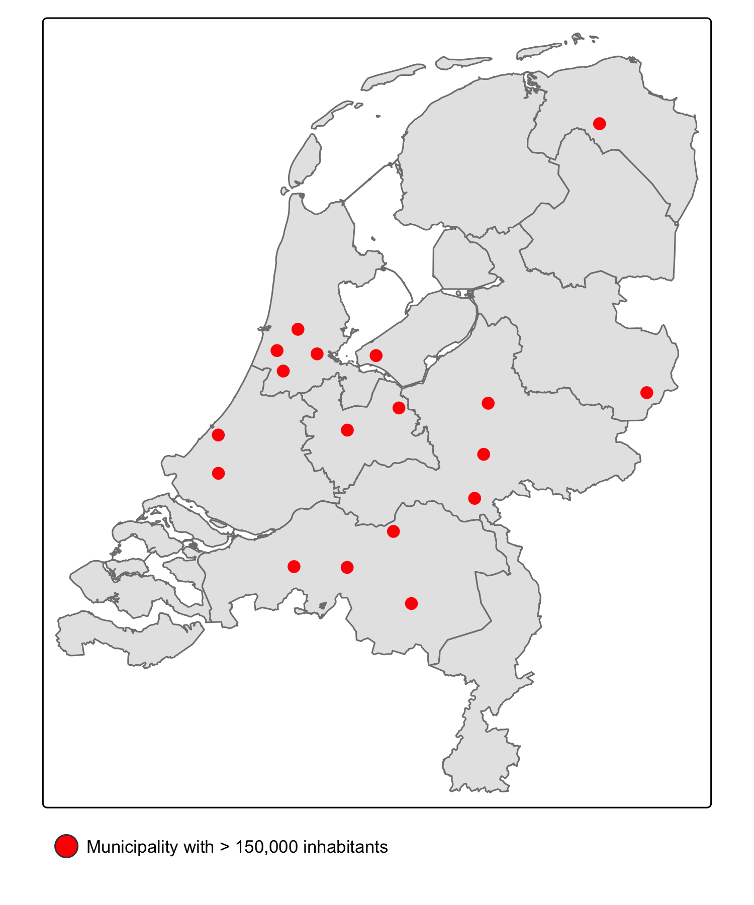
Visual hierarchy
What is visual hierarchy?
The ordering of map elements by visual prominence, so that it matches their importance for the message of the map.
- The most important elements (usually the thematic layer) stand out; context (borders, basemap, labels) recedes
- Figure–ground: the thematic layer is the figure, the rest the ground
- Tools: contrast, lightness and saturation of colors, line width, size, font size/weight
- Layer stacking (drawing order) helps, but is not the same thing: a layer on top can still be visually weak, and a basemap underneath can still dominate
Step 1: a first attempt
Border lines are too dense in urban areas: they dominate the map.
Step 1: a first attempt
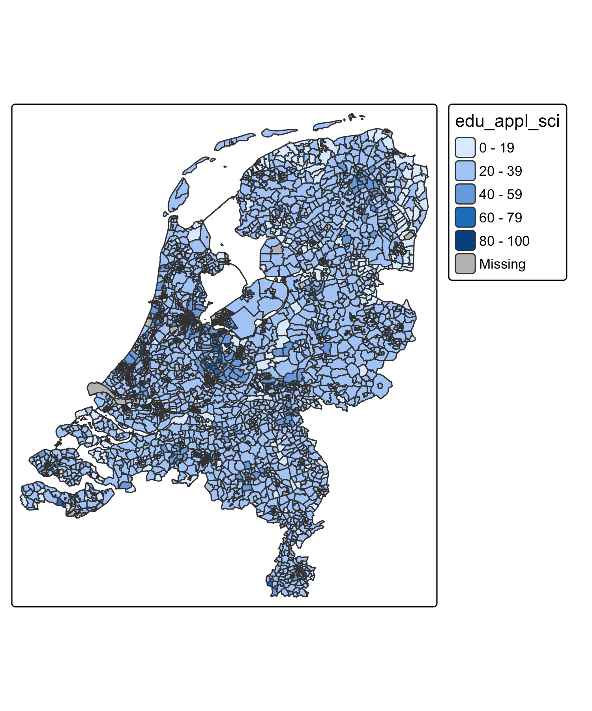
Step 2: borders as context
Line width expresses the hierarchy of administrative levels.
Step 2: borders as context
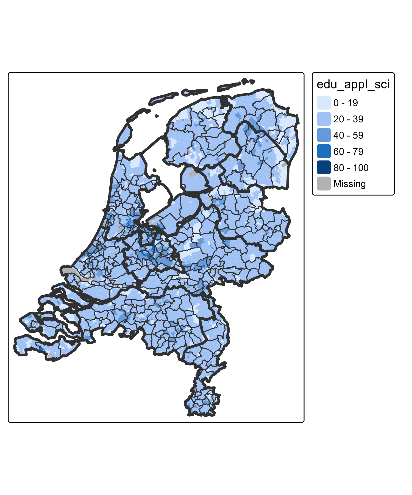
Step 3: palette, title and components
tm_shape(NLD_dist) +
tm_polygons(
fill = "edu_appl_sci",
fill.scale = tm_scale_continuous(values = "-orange_blue_diverging"),
fill.legend = tm_legend("", group_id = "top"),
col = NULL) +
tm_shape(NLD_muni) +
tm_borders(lwd = 1) +
tm_shape(NLD_prov) +
tm_borders(lwd = 3) +
tm_title("Population aged 15-75 with a university or\napplied sciences degree (%), October 2022",
position = tm_pos_out("center", "top", pos.h = "left")) +
tm_compass(group_id = "bottom") +
tm_scalebar(group_id = "bottom", breaks = c(0, 10, 50)) +
tm_credits("© Data: Statistics Netherlands, Software: R-tmap", group_id = "bottom") +
tm_components("top", position = tm_pos_in("left", "top"), frame = FALSE) +
tm_components("bottom", position = tm_pos_in("left", "bottom", align.h = "left")) +
tm_layout(inner.margins = c(0.02, 0.25, 0.02, 0.02))Step 3: palette, title and components
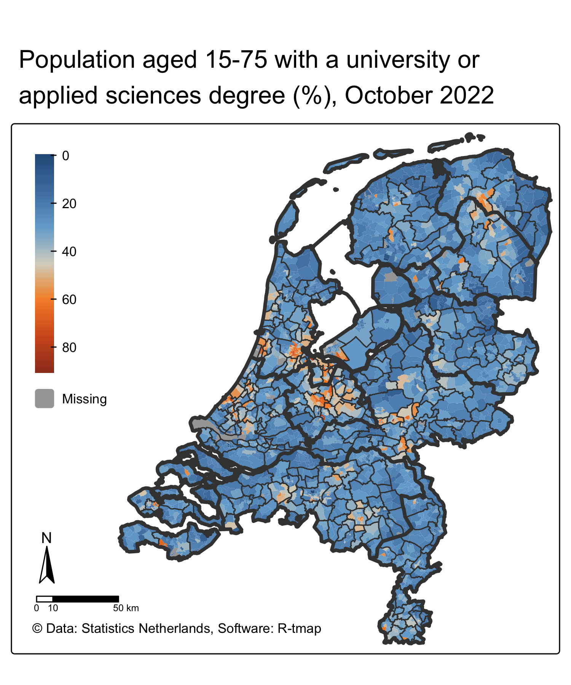
What changed in step 3?
- A diverging, color-blind friendly palette with sufficient contrast with the black border lines (
cols4all::c4a_gui()) - Legend title removed, because a map title is used instead
- Title placed above the map (
tm_pos_out()); legend top left - Compass, scale bar and credits grouped at the bottom left, where there is empty space
- Components placed inside the frame, so the map itself can be larger
- A larger left inner margin (
inner.margins) creates room for the legend and components
Text labels
opt_tm_text() / opt_tm_labels() also support shadow, background rectangles (bgcol), remove_overlap and point.label (label placement).
Text labels
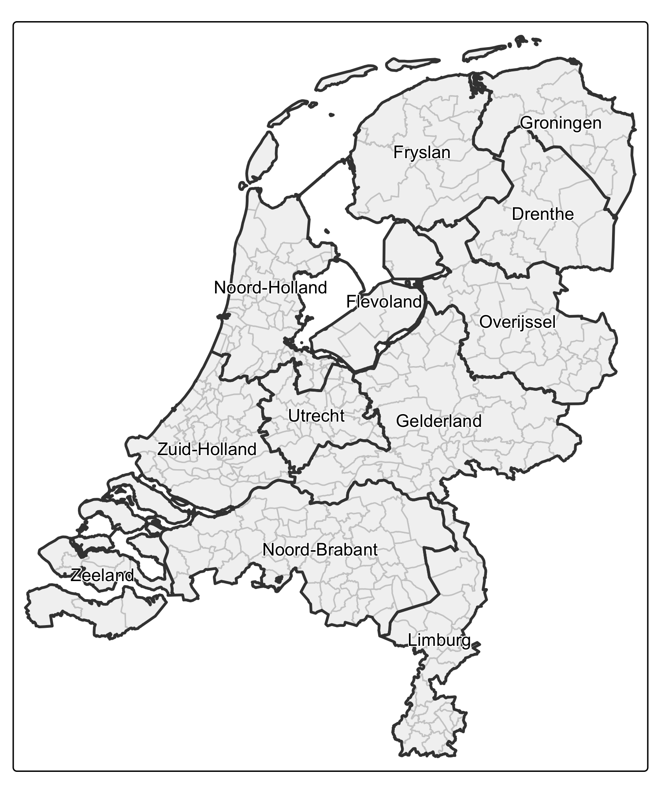
Layout
Background colors and frame
bg / outer.bg and frame switch these elements on and off.
Background colors and frame
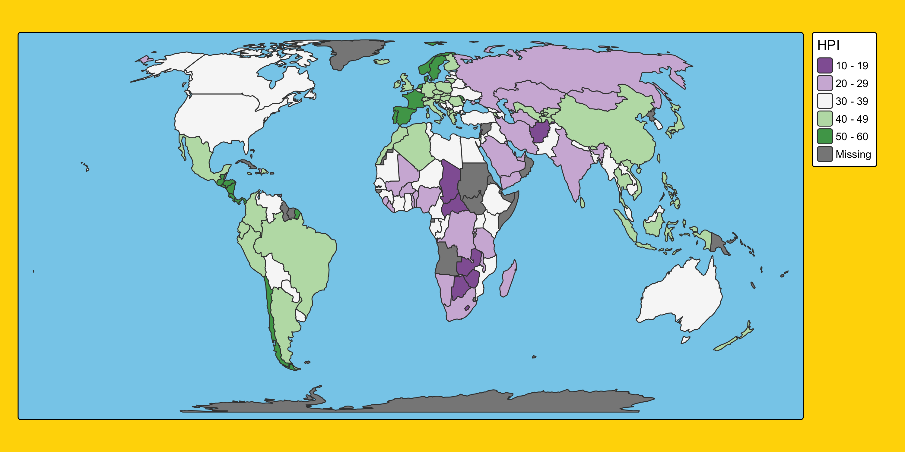
Earth boundary
Earth boundary
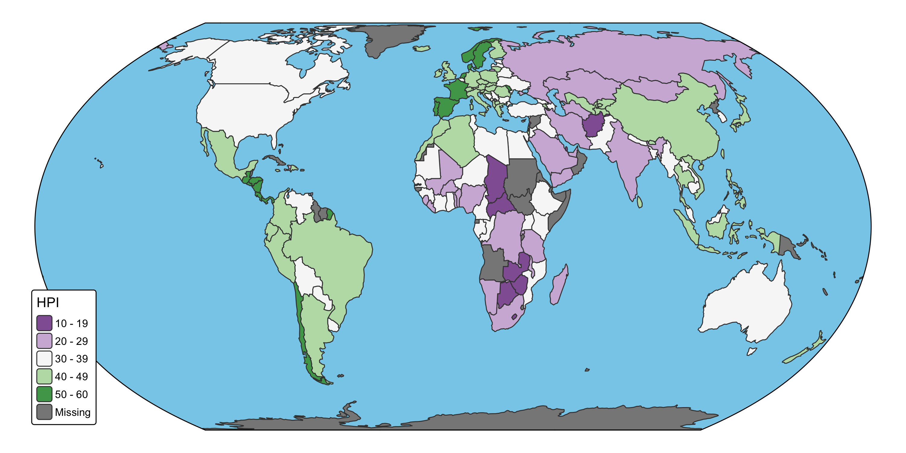
Margins
inner.margins: between map and frameouter.margins: between frame and device- Four numbers: bottom, left, top, right (relative to the frame)
See the margins vignette.
Margins
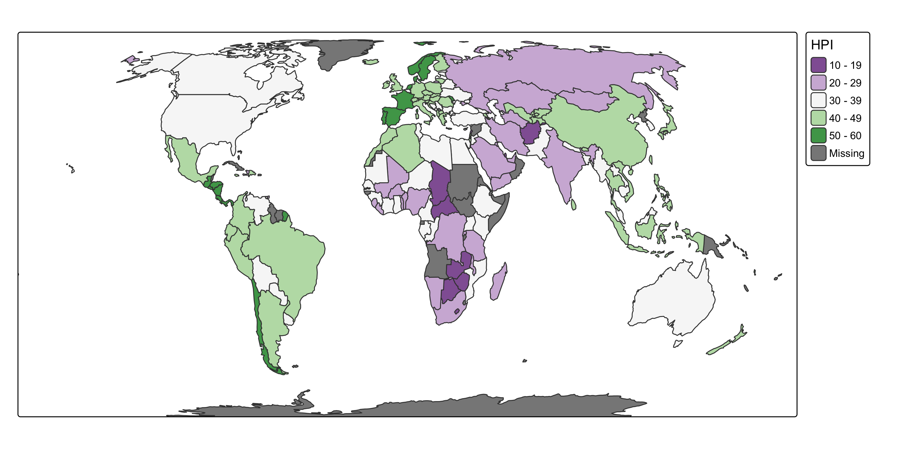
Map components and positioning
Components
| Component | Description |
|---|---|
tm_title() |
Title |
tm_credits() |
Credits / data source text |
tm_compass() |
North arrow |
tm_scalebar() |
Scale bar |
tm_logo() |
Logo image |
tm_inset() |
Inset map, ggplot2 chart, image (session 10) |
tm_minimap() |
Overview map |
tm_legend() |
Legend (specified in the layer function) |
tm_chart_*() |
Chart (specified in the layer function) |
Positioning: shortcut
- lower case: inside the frame, with a small offset
- upper case, e.g.
c("RIGHT", "BOTTOM"): tight against the frame - numeric: (0,0) = bottom left, (1,1) = top right
Positioning: shortcut
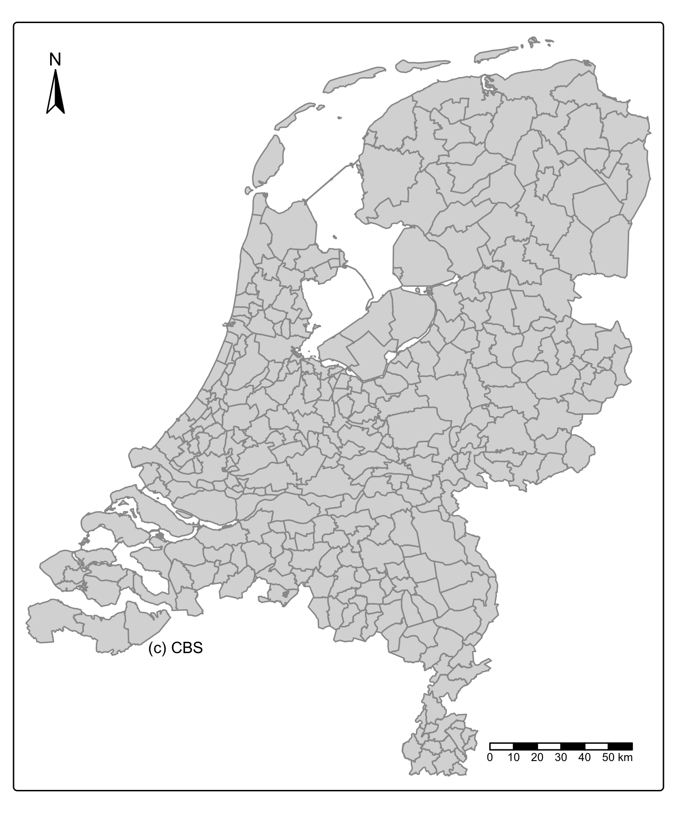
Positioning: tm_pos_in() and tm_pos_out()
- The plot area is a 3×3 grid; the centre cell is the map itself
tm_pos_in()→ inside the map frame;tm_pos_out()→ one of the 8 surrounding cellscell.h,cell.v(which cell),pos.h,pos.v(where in the cell),just.h,just.v,align.h,align.v

Grouping components
tm1 = tm_shape(NLD_muni) +
tm_bubbles(fill = "dwelling_value", size = "population") +
tm_compass() +
tm_scalebar() +
tm_credits("Statistics Netherlands")
tm1 +
tm_components("tm_legend", position = tm_pos_out("left", "center")) +
tm_components(c("tm_compass", "tm_scalebar", "tm_credits"),
position = tm_pos_out("center", "bottom"))Components can be selected by function name ("tm_legend", "tm_<other>") or by self-defined group_id.
Grouping components
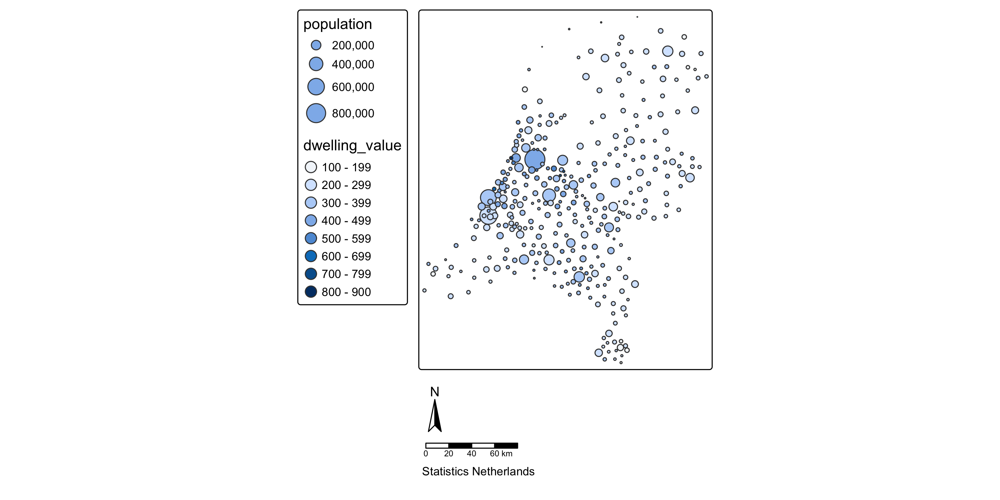
Charts
Other charts: tm_chart_histogram(), tm_chart_box(), tm_chart_violin(), tm_chart_donut(), tm_chart_heatmap()
Charts
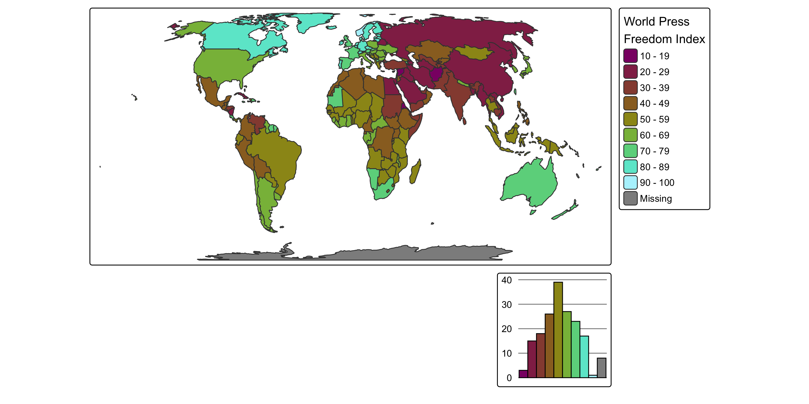
Design mode
tmap_design_mode() toggles a design mode: it overlays color-coded map elements and prints the current margins and aspect ratio.
Useful when components do not end up where you expect them.
Exporting
tmap_save()
- Pixel based (png, jpg, tiff) or vector based (pdf, eps, svg) — vector based is preferred for print
width/height: values < 50 are inches, otherwise pixels- Only one dimension given? The other follows from the aspect ratio of the map
- dpi: ≥ 144 for web (retina displays), 300 or 600 for print
- More on
scaleand exporting in session 12
Recap
- Match the map type to the data: densities, rates, percentages → choropleth; counts → symbols
- The scale (classification) changes the message: choose it deliberately
- Legend content in the scale, legend appearance in
tm_legend() - Build a visual hierarchy: the thematic layer visually dominant, context subordinate
- Position and group components with
tm_pos_in(),tm_pos_out(),tm_components() - Further reading: scales | legends | layout | positions | export